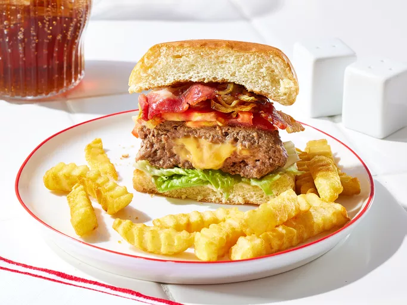

Burger

Ingredients
- 1 ½ pounds ground beef
- 1 tablespoon Worcestershire sauce
- 1 teaspoon black pepper
- ¾ teaspoon garlic salt
- 4 slices American cheese
- 4 hamburger buns, split
STEPS
- Gather all ingredients.
- Mix ground beef, Worcestershire sauce, pepper, and garlic salt together in a bowl until well combined.
- Form into eight thin patties, each slightly larger than a cheese slice.
- Cut each slice of American cheese into 4 equal pieces; stack the pieces.
- Sandwich one stack of cheese between 2 ground beef patties.
- Heat a large cast-iron skillet over medium heat. Cook patties in the hot skillet until well browned, about 4 minutes; they will puff up due to steam from the melting cheese.
- Flip patties, prick the tops to release steam, and cook until browned on the other side and no longer pink in the center; about 4 more minutes. An instant-read thermometer inserted into the center should read at least 160 degrees F (70 degrees C).
- Serve on hamburger buns.